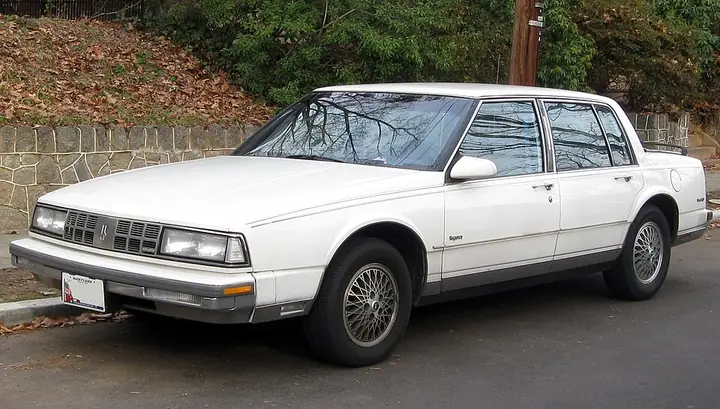
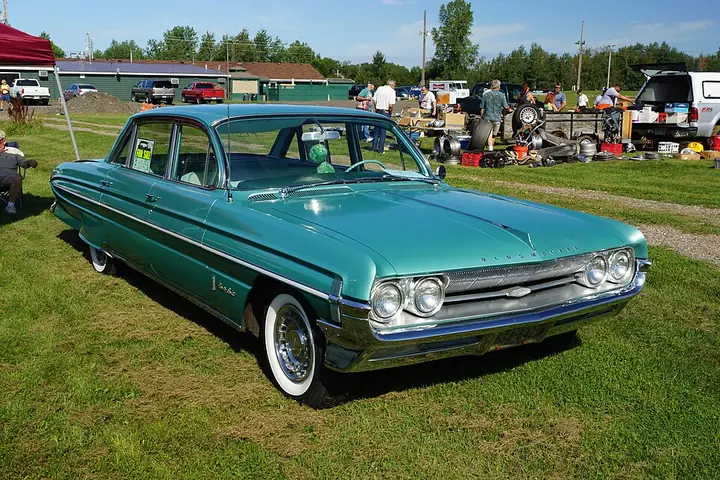
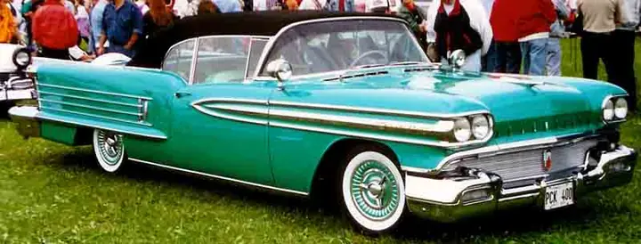
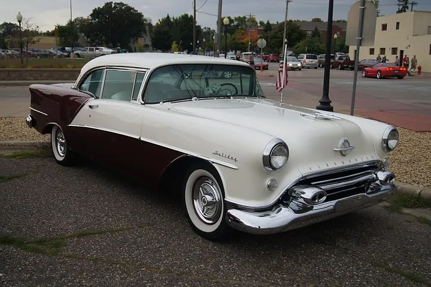
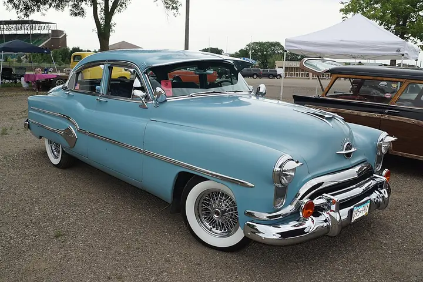

Oldsmobile 98
Twelfth generation (1991–1996) · 1991–1996
Abstract
This generation of the Oldsmobile 98 was built 1991–1996 in United States: Lake Orion, Michigan (Orion Assembly). Body styles: 4-door sedan. Layout: Transverse front-engine, front-wheel drive. Designed by Chuck Jordan.


1Specifications
| Model years | 1991–1996 |
|---|---|
| Assembly | United States: Lake Orion, Michigan (Orion Assembly) |
| Designer | Chuck Jordan |
| Body style | 4-door sedan |
| Layout | Transverse front-engine, front-wheel drive |
| Platform | GM C platform |
| Engine | 3.8 L L27/L36 V63.8 L L67 (Series I) supercharged V6 |
| Transmission | 4-speed 4T60-E automatic4-speed 4T60-E HD automatic |
| Wheelbase | 110.8 in |
| Length | 205.7 in1991–93 Touring: 205.8 in |
| Width | 74.6 in |
| Height | 54.8 in |
| Related | Buick Park AvenueCadillac De VilleCadillac FleetwoodCadillac Sixty Special |
2Previous generations




.jpg){kind=link}

.jpg){kind=link}



.jpg){kind=link}

.jpg){kind=link}

1.jpg){kind=link}

.jpg){kind=link}
3Generation by generation
Length −3% from the first to the last
1941 19415,410 mm
1942 19425,486 mm
1948–1953 19485,410 mm
1954–1956 19545,443 mm
1957–1958 19575,504 mm
1959–1960 19595,664 mm
1961–1964 19615,537 mm
1965–1970 19655,662 mm
1971–1976 19715,743 mm
1977–1984 19775,624 mm
1985–1990 19854,981 mm
1991–1996 19915,225 mm
Weight +34% from the first to the last
1941 19411,588 kg
1942 19421,724 kg
1948–1953 19481,678 kg
1954–1956 19541,814 kg
1957–1958 19572,132 kg
1959–1960 19592,041 kg
1961–1964 19611,996 kg
1965–1970 19651,950 kg
1971–1976 19712,132 kg